Learn Cantonese · 識聽識講 廣東話
Cantonese as it is actually spoken in Hong Kong and Guangzhou — Jyutping from scratch, listening and speaking drills, everyday dialogues, and more than 12,000 slang entries that no textbook will teach you. This page explains every screen in the app and answers the questions people write to us about most.
An unusually large amount of real Cantonese
Most Cantonese apps stop at a few hundred phrases. These are the actual counts of what ships inside this one.
| Collection | What it covers | Entries |
|---|---|---|
| Hong Kong slang | Everyday spoken expressions with meanings and example sentences | 12,116 |
| Phrases 詞 | Multi-character words, grouped by their head character | 3,146 |
| Characters 字 | Core characters with Jyutping and meaning | 2,167 |
| Daily sentences | Situational sentences for real conversations | 1,398 |
| Popular words | The 常用粵語 flashcard deck | 680 |
| Reduplication 叠詞 | AAB, ABB, AABB and ABAB patterns with meanings | 472 |
| Mini stories | Short graded stories with per-line audio | 274 |
| Dialogues | Two-person conversations played back as a chat | 209 |
| Three Character Classic | 粵語三字經 couplets with readings and meanings | 142 |
| Gen Z slang | Current under-25 Hong Kong internet slang | 120 |
| Children's songs | 廣東話童謠 with notes on origin and variants | 95 |
| Tongue twisters | 急口令, with background notes behind the info icon | 71 |
| Guangzhou collections | Regional expressions, old-Guangzhou history, rhymes, local characters | 340+ |
| Articles 篇 | Longer readings, played sentence by sentence | 20 |
A guided tour of the app
There is no bottom tab bar. Everything branches from the four tiles on the home screen: Listening, Speaking, Dialogues and Hong Kong.
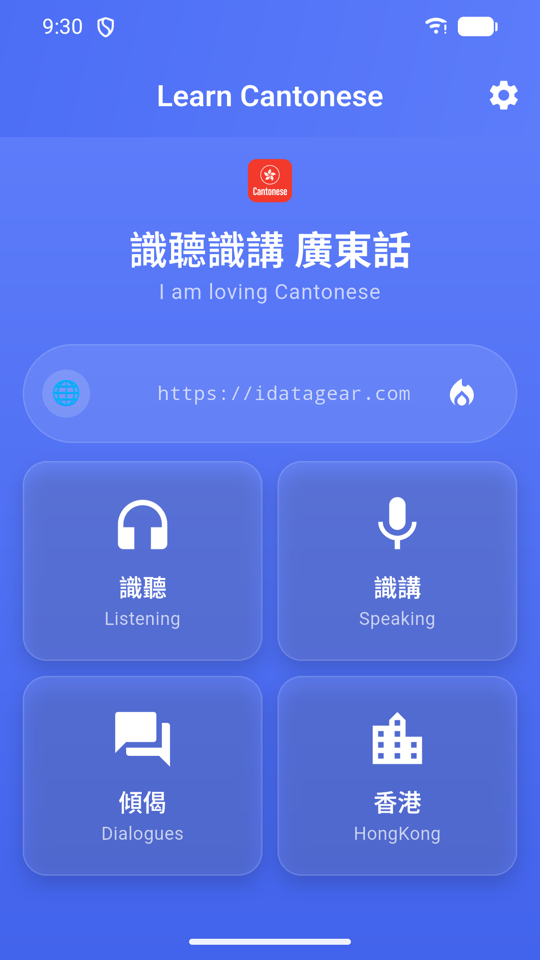
Home
Four tiles, and that is the whole navigation model: 識聽 Listening (understand it), 識講 Speaking (say it), 傾偈 Dialogues (use it) and 香港 HongKong (the culture and slang). The banner above them shows your daily streak as a flame, and the gear icon in the top-right opens Settings — which is where you will go first if the audio is not working.
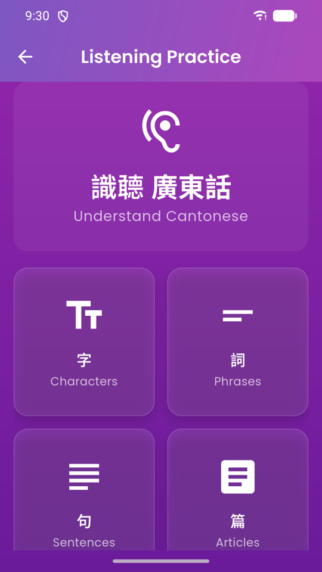
Listening practice
Four steps up a ladder: 字 Characters → 詞 Phrases → 句 Sentences → 篇 Articles. Start at whichever rung matches you. Complete beginners should spend their first week in Characters and Phrases; anyone who already understands some Cantonese can jump straight to Sentences.
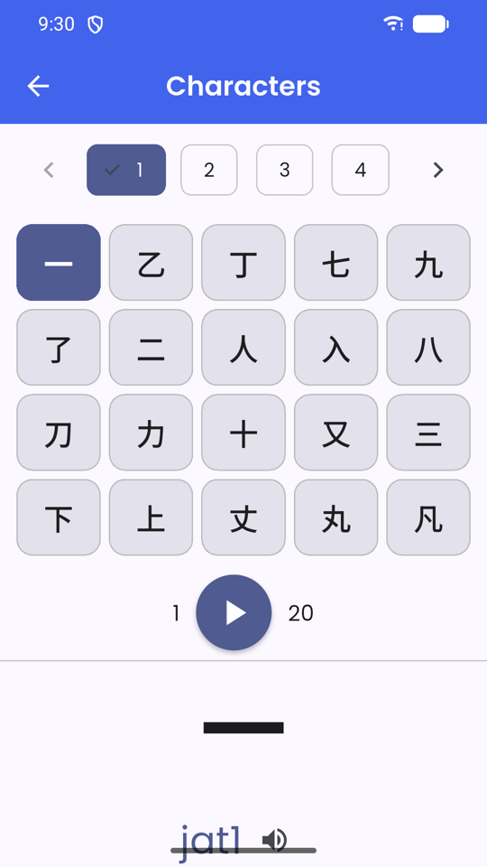
Characters
2,167 core characters, each with its Jyutping and English meaning. Tap any row to hear it. This is the raw material — almost everything else in the app is built out of these.
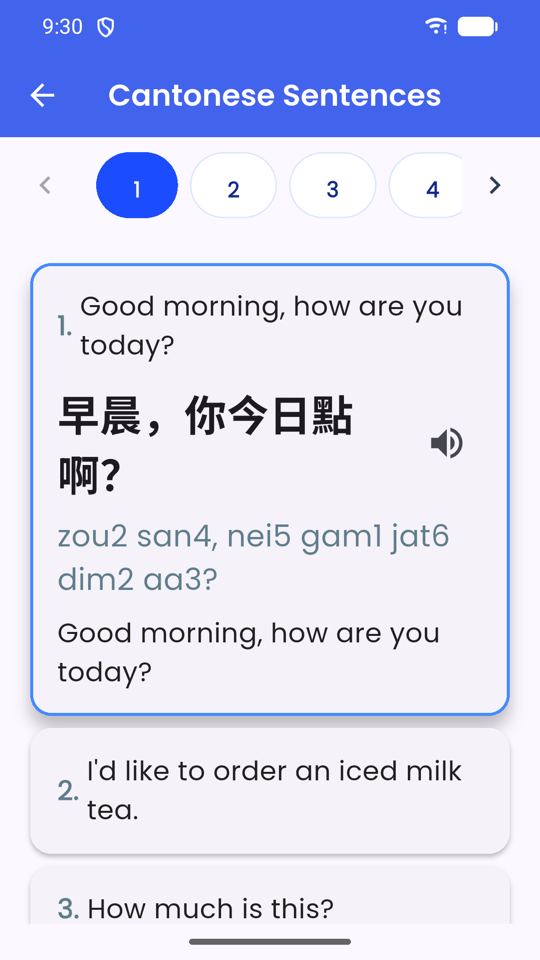
Sentences
Full sentences with Jyutping underneath and an English translation, each one playable. Read along with the Jyutping the first few times, then cover it and listen again — that gap is where the learning happens.
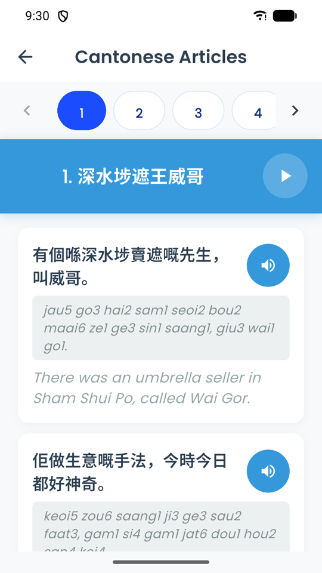
Articles
Twenty longer readings, broken into sentences with audio and translation on each. Tap a single line to replay just that line — much more useful than restarting a whole passage because one clause went past too fast.
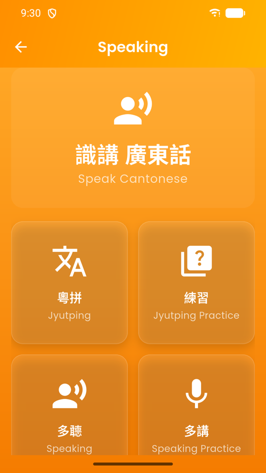
Speaking
粵拼 Jyutping is the pronunciation guide. 練習 Jyutping Practice drills it. 多聽 Speaking gives you batches of daily sentences to shadow, and 多講 Speaking Practice turns on the microphone and scores you. Work through them in that order — the guide first, always.
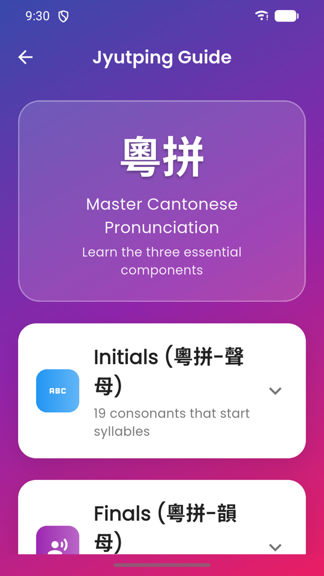
Jyutping Guide
Cantonese pronunciation has three moving parts, and this screen covers all three: Initials 聲母 — the 19 consonants a syllable can start with; Finals 韻母 — everything that comes after; and Tones 聲調 — the six pitches that change a word's meaning entirely.
Every example is tappable, so you hear the sound rather than reading a description of it. Give this screen ten focused minutes before you do anything else in the app; it is the difference between guessing at pronunciations forever and being able to read a new word correctly on sight.
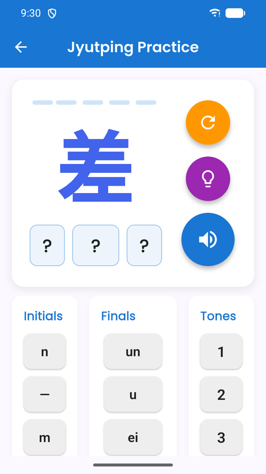
Jyutping practice
Takes a character and asks you to assemble its Jyutping from the parts — initial, then final, then tone. Because it separates the three, it shows you precisely which one you keep getting wrong. For most learners it is the tone.
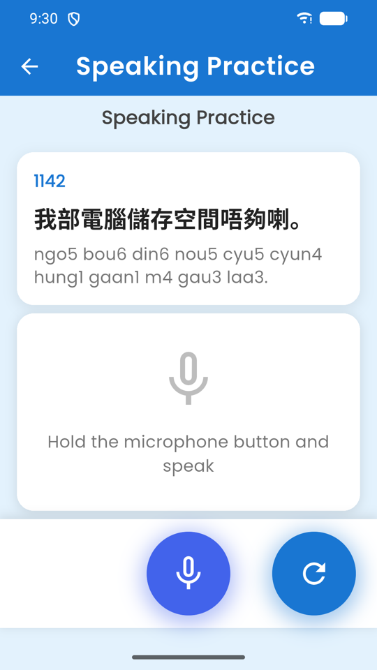
Speaking practice
A sentence appears with its Jyutping. Hold the microphone button and read it aloud. Your device transcribes what it heard and the app compares that against the target text to score how close you got.
It is measuring whether you were understood, not how native you sound. A low score usually means a tone was wrong — go back to the Jyutping Guide and check that syllable's tone number.
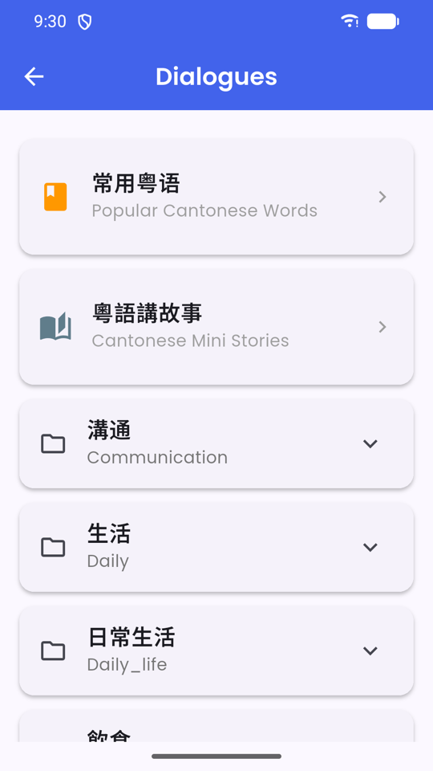
Dialogues
At the top sit 常用粵語 Popular Cantonese Words (the flashcard deck) and 粵語講故事 Mini Stories. Below them the dialogues are filed into expandable categories — 溝通 Communication, 生活 Daily, 日常生活 Daily life, 飲食 Food and more. Open any dialogue and it plays as a chat, one bubble per turn, with audio on each line.
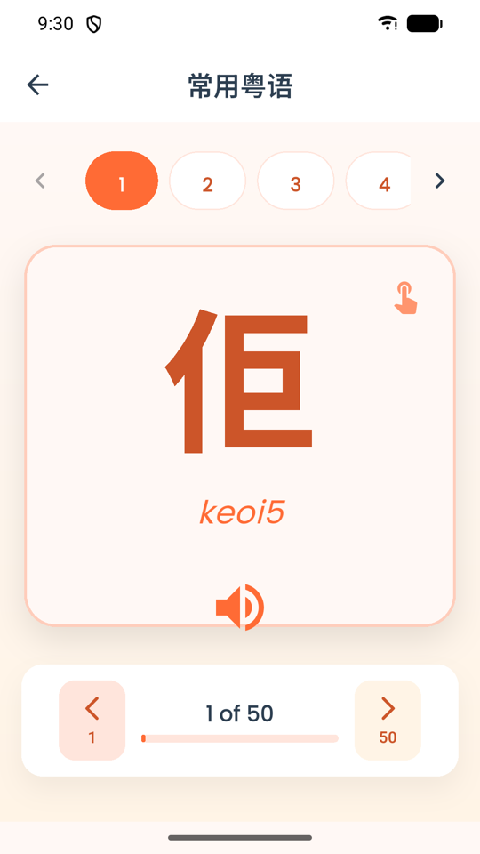
Popular words
680 of the most-used Cantonese words as flip cards. Tap the card to flip it and see the meaning; the speaker plays the audio. The deck is split into batches of fifty — the numbered tabs across the top switch batch, and the bar at the bottom shows how far through you are (1 of 50). One batch is a comfortable sitting.
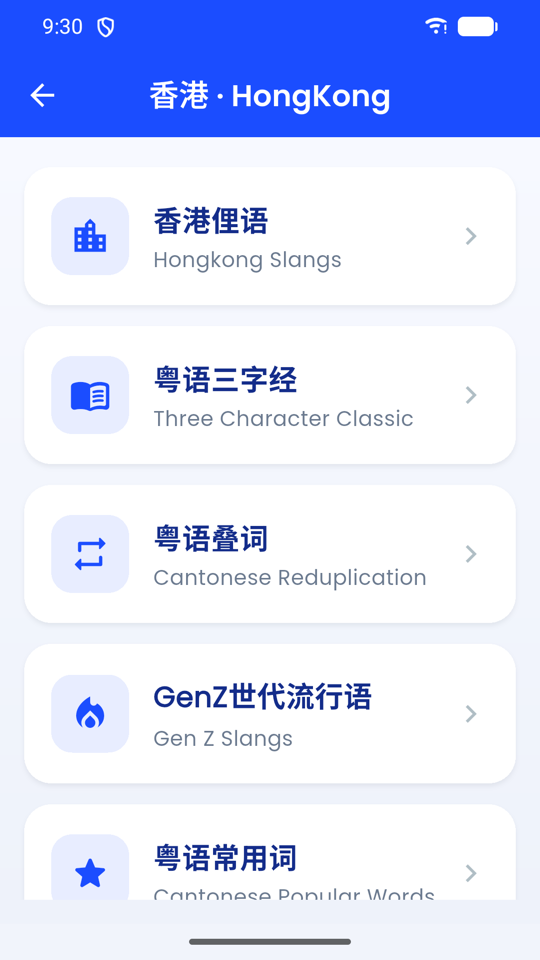
The Hong Kong menu
Eight collections: 香港俚語 Hong Kong Slang, 粵語三字經 (the Cantonese Three Character Classic), 粵語叠詞 (reduplication patterns), GenZ世代流行語, 粵語常用詞, 粵語急口令 (tongue twisters), 廣東話童謠 (children's songs) and 廣州方言匯集 (the Guangzhou collections).
This is the section that separates textbook Cantonese from the language people actually speak. The Guangzhou set at the bottom is regional rather than Hong Kong material, and includes old-Guangzhou social history, local nursery rhymes, and Cantonese-only characters listed with their 五筆 and pinyin input codes — the two screens in the app that have a search box.
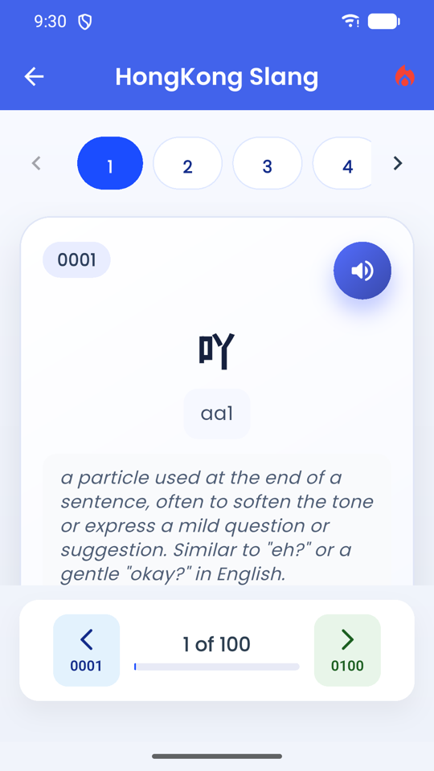
Hong Kong slang
Over twelve thousand entries, paged in blocks of one hundred with numbered tabs across the top. Each card gives the term, its Jyutping, a plain-English explanation of how it is used, and audio. The example above is 吖 aa1 — a sentence-final particle that softens a statement, the kind of tiny word that makes the difference between correct Cantonese and natural Cantonese.
Do not try to work through this front to back. Dip into a page, keep the two or three that sound useful, move on.
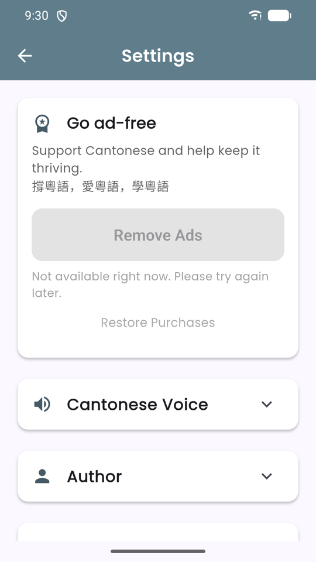
Settings
Cantonese Voice lists the voices installed on your device — tap a face to select it and hear a sample. Play Speed slows the audio down, which almost everyone needs at the start. 粵語試聽 Audio Test has a Listen button to confirm sound is working at all. Further down are Author, related apps, and App Information with the version and build number you will need if you email us.
The Go ad-free card at the top is the one-off Remove Ads purchase, with Restore Purchases underneath it for when you change device.
Three walkthroughs worth doing first
Especially the first one. Skipping Jyutping is the single most common mistake learners make.
Read Jyutping in ten minutes
- From Home, tap 識講 Speaking, then 粵拼 Jyutping.
- Open Initials 聲母. Tap through all 19 — several have no English equivalent, so listen rather than read.
- Open Finals 韻母 and do the same. Pay attention to the ones ending in -p, -t, -k; they stop dead, with no released puff of air.
- Open Tones 聲調. Play tone 1 and tone 4 back to back, then 2 and 5, then 3 and 6.
- Now read a Jyutping syllable out loud before tapping it, then tap to check. Do ten.
- That is enough. You will absorb the rest through use — go straight to 練習 Jyutping Practice.
Score your pronunciation
- Tap 識講 Speaking → 多講 Speaking Practice.
- Grant the microphone permission when your device asks.
- Read the sentence and its Jyutping silently first — check the tone numbers.
- Hold the microphone button, say the sentence at normal speed, then release.
- Compare the transcript against the target. Where they differ is where your tone slipped.
- Tap the refresh button to try the same line again. Three attempts on one sentence beats one attempt on three.
Get the Cantonese voice working
- Open Settings (gear icon, top-right of Home).
- Expand 粵語試聽 Audio Test and press Listen.
- If you hear nothing, you have no Cantonese voice installed — see the section below.
- Once it speaks, expand Cantonese Voice and tap each face to sample the installed voices.
- Pick the clearest one, then drag Play Speed down a notch or two.
- Test again. Raise the speed back towards normal as your ear improves.
If you cannot hear anything
Cantonese voices are not installed by default on most phones. This is the fix.
The app speaks using the text-to-speech engine built into your device, set to Cantonese
(yue-HK). That is what makes audio available on all twelve thousand slang entries instead of a
hand-recorded handful.
The app will never read Cantonese text with a Mandarin voice. That is deliberate. Mandarin pronunciation of Cantonese text is simply wrong, and hearing it would teach you the wrong thing — so when no Cantonese voice exists, the app stays silent instead of substituting one.
On Android: install or enable Google Text-to-Speech, then add its
Cantonese (Hong Kong) voice data. The app will offer you a direct link to it on Google Play
the first time it notices the voice is missing.
On iPhone or iPad: go to Settings › Accessibility › Spoken Content › Voices › Chinese
and download a Cantonese voice, then reopen the app.
Afterwards, open Settings → Cantonese Voice. The app lists the voices your device actually has, by name rather than as a male/female switch — Android does not report a voice's gender, so the honest thing is to let you hear each one. Tap a face to sample it and select it.
Which version should you use?
Cantonese audio is the deciding factor, and browsers are unreliable at it.
| Feature | Web | Android app |
|---|---|---|
| All characters, phrases, sentences, slang, dialogues | Yes | Yes |
| Nothing to install | Yes | — |
| Cantonese text-to-speech | Rarely available in browsers | Yes, using the device voice |
| Speaking practice with the microphone | Unreliable in most browsers | Yes |
| Works without a connection | — | Content is stored on the device |
| Remove Ads purchase | — | Yes, one-off |
| Streak survives between visits | Kept in your browser only | Kept on the device |
Because so much of learning Cantonese is listening, the Android app is the one to use if you are serious. The web build is for having a look around first.
Common questions
What is Jyutping, and do I have to learn it?
Jyutping is the standard romanisation for Cantonese. It writes a syllable as an initial, a final and a tone number from 1 to 6 — 我 is ngo5. You do not strictly have to learn it, but it is the fastest way to read a pronunciation you have never heard, and the app shows it everywhere. The ten-minute walkthrough above is genuinely all it takes.
Is Learn Cantonese free?
Yes. Every section is unlocked from the start. The app is funded by ads and offers one optional in-app purchase — Remove Ads — which hides them permanently. No content is behind a paywall.
Why is there no Cantonese sound?
Your device has no Cantonese voice installed, and the app will not substitute a Mandarin one because that would teach you the wrong pronunciation. Install the Cantonese (Hong Kong) voice for Google Text-to-Speech on Android, or download a Cantonese voice under Settings › Accessibility › Spoken Content › Voices › Chinese on iPhone. Full steps in Audio & voices.
Can I choose a different voice, or slow it down?
Yes — Settings → Cantonese Voice lists the voices installed on your device; tap a face to select it and hear a sample. Play Speed underneath slows playback down. Most learners want it slower for the first few weeks.
Is this Hong Kong Cantonese or Guangzhou Cantonese?
Mostly Hong Kong. The main tracks and the slang collections are Hong Kong Cantonese. 廣州方言匯集, under the Hong Kong menu, is a separate Guangzhou set — regional expressions, old-Guangzhou social history, local nursery rhymes, and Cantonese-only characters with their input codes.
How does Speaking Practice score me?
Your device's speech recogniser transcribes what you said, and the app compares that transcript against the target sentence character by character. It is measuring whether you would be understood, not how native your accent is. A low score most often means a tone was off.
Can I save words to a favorites list?
Not currently — Learn Cantonese has no favorites feature. Content is instead organised into fixed numbered batches so you can reliably pick up where you left off; most collections page through in blocks of fifty or a hundred, with your position shown at the bottom of the screen.
Will I lose my progress if I reinstall?
Yes. There is no account and no cloud sync, so your streak and settings live only on your device and uninstalling clears them.
I bought Remove Ads but the ads came back.
Open Settings and tap Restore Purchases. The app also re-checks with Google Play every time it launches, so make sure you are signed in with the account you purchased on. Still stuck? Let us know.
Is the web version the same as the Android app?
Same content, fewer capabilities — see the comparison table. Browsers rarely have a Cantonese voice available, which is most of the point of this app, so use the web version to look around and the Android app to study.
識聽識講 廣東話
Open it in your browser now, or install the Android app for offline study and proper Cantonese audio.